¿La capacidad del auditor, el plazo legal y los dueños de las sociedades se leen como esperas en el playground y en la Brecha? Mira cada fila de la tabla con su recorte.
El plazo y los dueños · mirada de forma «no vista» (S9)
Vitrina construida con el commit en curso, servida desde out/. Clase de mirada: FORMA, registrada «no vista»; su veredicto viaja al gate del hito H-2 (el ensayo general). Solo en español: el inglés llega al cierre del hito. Las capturas enteras no se versionan: cada una queda con su huella SHA-256 y una miniatura de la parte de arriba.
La matriz
| # | Archivo / pantalla | Botón o estado | Qué mirar | Respuesta esperada | Tu respuesta |
|---|---|---|---|---|---|
| 1 | Playground (/es/playground), «La capacidad del auditor» | tal como abre | El deslizador de la capacidad con su marca «plan 30», la tabla por clase y la frase que dice si alguien sale de su plazo, con su símbolo y su texto. | 30 casos por día hábil (de 10 a 60); «Con 30 casos por día hábil, toda solicitud se decide dentro de su plazo.»; Hospitalaria 72 horas, 30 de 54 esperaron, «0 · cumple» en fuera de plazo, espera mediana 18 min y máxima 15 h 33 min; Ambulatoria 7 días calendario, 40 de 123, 0 fuera de plazo, 18 min y 16 h 0 min; «Con estos umbrales el plazo se cumple desde 8 casos por día hábil; con una menos salen 14. Queda por debajo de lo que este control deja mover (10–60).» | sin respuesta |
| 2 | Playground, la capacidad en 10 y U1 en 0,95 (pasada de interacción) | tras mover la capacidad a 10 y U1 a 0,95 | Que la frase y las cifras de la tabla cambien al mover los controles, que «movido desde 30» aparezca y que el punto donde se rompe siga diciéndose. | «Con 10 casos por día hábil, toda solicitud se decide dentro de su plazo.» (con U1 en 0,95 pasan más solicitudes al auditor y la espera sube); «Con estos umbrales el plazo se cumple desde 9 casos por día hábil; con una menos salen 24.»; la chip «movido desde 30». | sin respuesta |
| 3 | Playground, la capacidad en el teléfono | tal como abre, 380 px | Que cada clase se lea en su propia tarjeta (seis columnas no caben en 380 px), sin cortar cifras, y que la frase y el deslizador quepan. | Nada se sale de la pantalla; una tarjeta por clase con plazo, cuántas esperaron, «0 · cumple» con su palomita, espera mediana y máxima; el deslizador y la frase se leen enteros. | sin respuesta |
| 4 | Brecha (/es/brecha), el bloque «Plazos: el reloj simulado», como líder | tal como abre | Tres frases llanas: lo que se cumplió con su margen, dónde se rompe el plazo y que las llegadas son simuladas. | «Toda solicitud con plazo se decidió a tiempo. La que más esperó fue hospitalaria: 15 h 33 min de espera frente a un plazo de 72 horas…»; «Donde se rompe: el plazo se cumple desde 8 casos por día hábil y con una menos salen 14. Eso queda por debajo del tramo que el playground deja mover (10–60)…»; «Las horas de llegada son simuladas…». | sin respuesta |
| 5 | Brecha, el bloque de plazos, perfil experto (pasada de interacción) | tras pulsar «Experto» | Que aparezcan la cola, la tabla por clase, los supuestos de la simulación y la norma con su fecha de consulta. | La tabla Hospitalaria / Ambulatoria con sus siete columnas; «Pasaron por el auditor 70 solicitudes: 14 por día hábil…»; «Horas de auditor… 14 h»; los cinco supuestos; «Fuente de los plazos: CMS-0057-F… Consultada el 2026-11-03». | sin respuesta |
| 6 | Brecha del demo B (/es/demo-b/brecha), «Dueños de las sociedades», en el teléfono | tal como abre, 380 px | Que diga cuántas sociedades se midieron, que 8 de 8 orienta pero no prueba y que el lote no probó las instrucciones escondidas. | «De 8 sociedades, el conjunto de dueños finales coincidió con la verdad conocida en las 8. Con tan pocas, la cifra orienta pero no prueba: cada sociedad pesa 12,5 puntos.»; «Este lote no trae instrucciones escondidas…». | sin respuesta |
Los recortes
1. Playground (/es/playground), «La capacidad del auditor»
tal como abre · 1280 px · oscuro
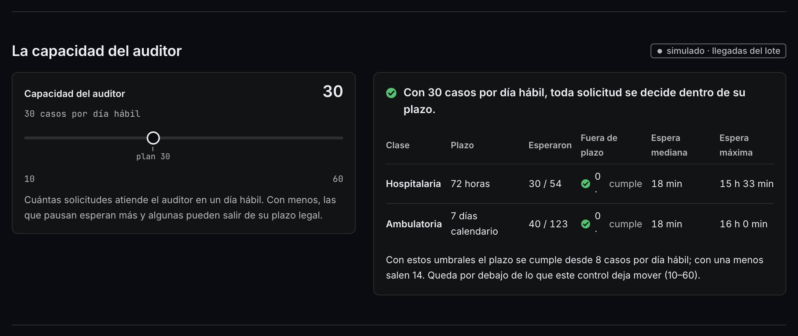
2. Playground, la capacidad en 10 y U1 en 0,95 (pasada de interacción)
tras mover la capacidad a 10 y U1 a 0,95 · 1280 px · claro · la interacción cambió la página
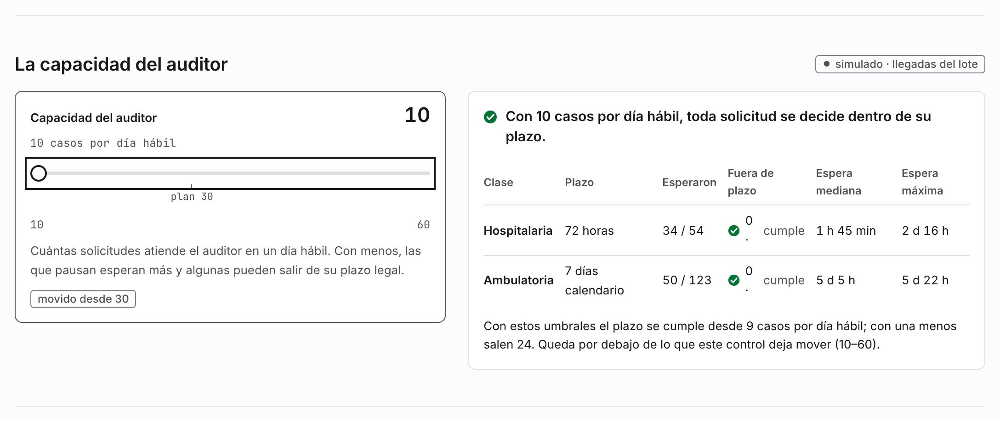
3. Playground, la capacidad en el teléfono
tal como abre, 380 px · 380 px · claro
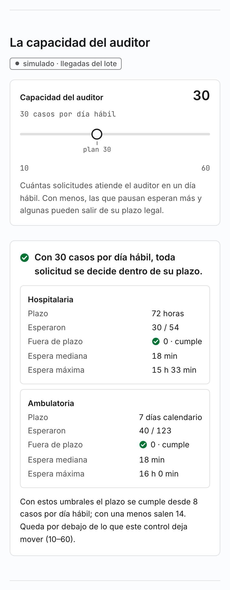
4. Brecha (/es/brecha), el bloque «Plazos: el reloj simulado», como líder
tal como abre · 1280 px · claro
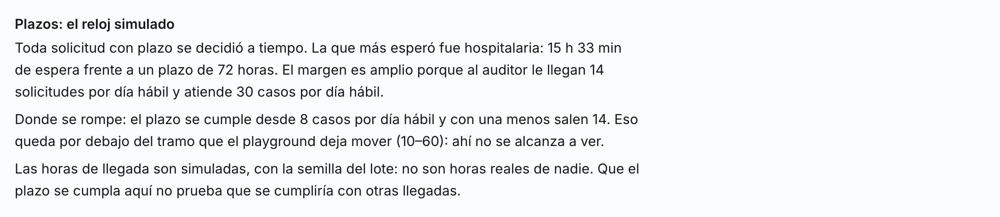
5. Brecha, el bloque de plazos, perfil experto (pasada de interacción)
tras pulsar «Experto» · 1280 px · oscuro · la interacción cambió la página
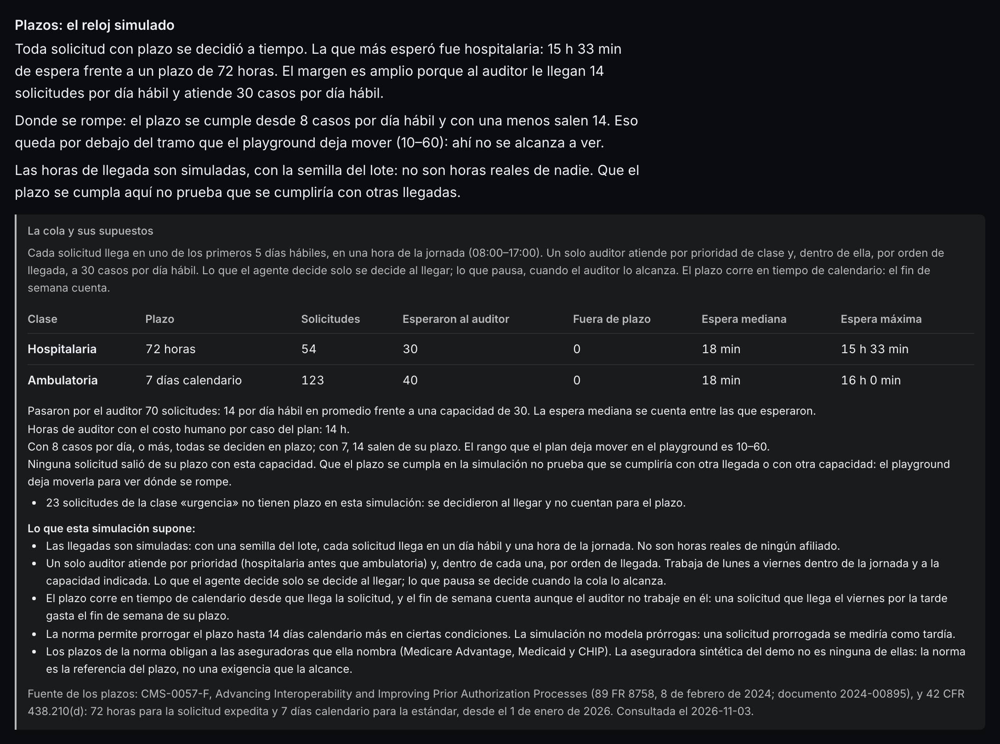
6. Brecha del demo B (/es/demo-b/brecha), «Dueños de las sociedades», en el teléfono
tal como abre, 380 px · 380 px · claro
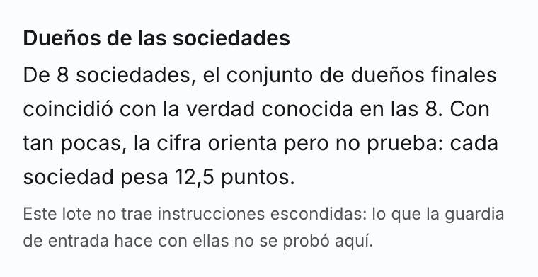
La pasada completa (12 capturas)
El playground y la Brecha de los dos demos, a 380 y 1280 px: en español en los dos temas. La miniatura es la parte de arriba; la huella identifica la captura entera que se leyó.
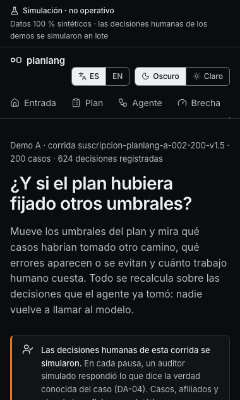
322879342f21…5ec963f89911…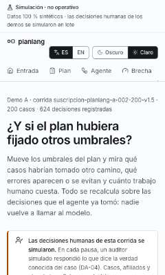
4f33be1fe47d…5c392d31ac23…
5429f038cde9…05e2068e64e5…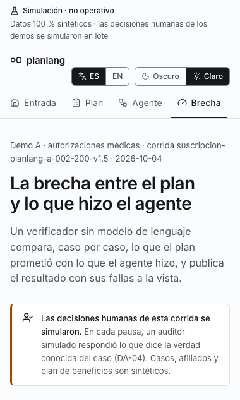
4e7beb8395a2…a97b9ab7023e…15b4d78b23fa…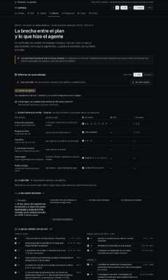
9b42465d92e6…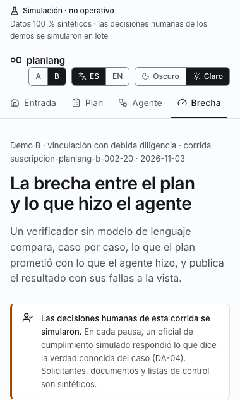
0f5c676b1598…185b67797b11…